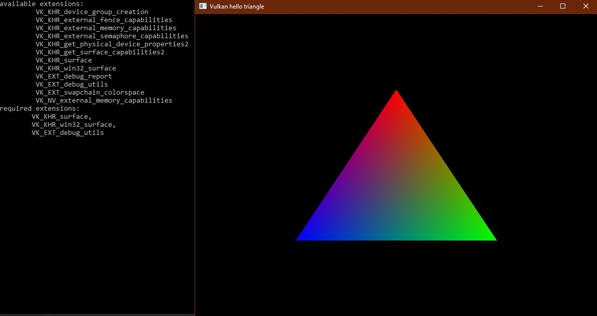

p5 in parallel

// always include fmt before Application.h (includes windows.h and so does glfw)
#include <fmt/format.h>
#include "Application.h"
#define GLM_FORCE_RADIANS
#define GLM_FORCE_DEPTH_ZERO_TO_ONE
#include <glm/vec4.hpp>
#include <glm/mat4x4.hpp>
#include <map>
#include <set>
#include <algorithm>
#include <fstream>
//----------------------------------------------------------------------------------------
constexpr int WINDOW_WIDTH = 800;
constexpr int WINDOW_HEIGHT = 600;
constexpr int MAX_FRAMES_IN_FLIGHT = 2;
const std::vector<const char*> DEVICE_EXTENSIONS = {VK_KHR_SWAPCHAIN_EXTENSION_NAME};
const std::vector<const char*> VALIDATION_LAYERS = {"VK_LAYER_KHRONOS_validation"};
#ifdef NDEBUG
constexpr bool ENABLE_VALIDATION_LAYERS = false;
#else
constexpr bool ENABLE_VALIDATION_LAYERS = true;
#endif
static VkDebugUtilsMessengerEXT sg_debugMessenger;
//----------------------------------------------------------------------------------------
static std::vector<char>
readFile(const std::string& filename)
{
try
{
std::ifstream file(filename, std::ios::ate | std::ios::binary);
if (!file.is_open())
{
throw std::runtime_error(fmt::format("failed to open file: {}", filename));
}
size_t fileSize = file.tellg();
std::vector<char> buffer(fileSize);
file.seekg(0);
file.read(buffer.data(), fileSize);
return buffer;
}
catch (const std::exception& ex)
{
throw ex;
}
}
//----------------------------------------------------------------------------------------
static VKAPI_ATTR VkBool32 VKAPI_CALL
debugCallback(
VkDebugUtilsMessageSeverityFlagBitsEXT messageSeverity,
VkDebugUtilsMessageTypeFlagsEXT messageType,
const VkDebugUtilsMessengerCallbackDataEXT* pCallbackData,
void* pUserData)
{
UNREFERENCED_PARAMETER(messageType);
UNREFERENCED_PARAMETER(pUserData);
if (messageSeverity >= VK_DEBUG_UTILS_MESSAGE_SEVERITY_VERBOSE_BIT_EXT)
{
fmt::print("VALIDATION LAYER: {}\n", pCallbackData->pMessage);
}
return VK_FALSE;
}
//----------------------------------------------------------------------------------------
static VkResult
CreateDebugUtilsMessengerEXT(
VkInstance instance,
const VkDebugUtilsMessengerCreateInfoEXT* pCreateInfo,
const VkAllocationCallbacks* pAllocator,
VkDebugUtilsMessengerEXT* pDebugMessenger)
{
auto func = (PFN_vkCreateDebugUtilsMessengerEXT)vkGetInstanceProcAddr(
instance, "vkCreateDebugUtilsMessengerEXT");
if (func != nullptr)
{
return func(instance, pCreateInfo, pAllocator, pDebugMessenger);
}
else
{
return VK_ERROR_EXTENSION_NOT_PRESENT;
}
}
//----------------------------------------------------------------------------------------
static void
DestroyDebugUtilsMessengerEXT(
VkInstance instance,
VkDebugUtilsMessengerEXT debugMessenger,
const VkAllocationCallbacks* pAllocator)
{
auto func = (PFN_vkDestroyDebugUtilsMessengerEXT)vkGetInstanceProcAddr(
instance, "vkDestroyDebugUtilsMessengerEXT");
if (func != nullptr)
{
func(instance, debugMessenger, pAllocator);
}
}
//----------------------------------------------------------------------------------------
static void
populateDebugMessengerCreateInfo(VkDebugUtilsMessengerCreateInfoEXT& createInfo)
{
createInfo = {};
createInfo.sType = VK_STRUCTURE_TYPE_DEBUG_UTILS_MESSENGER_CREATE_INFO_EXT;
createInfo.messageSeverity = VK_DEBUG_UTILS_MESSAGE_SEVERITY_VERBOSE_BIT_EXT
| VK_DEBUG_UTILS_MESSAGE_SEVERITY_WARNING_BIT_EXT
| VK_DEBUG_UTILS_MESSAGE_SEVERITY_ERROR_BIT_EXT;
createInfo.messageType = VK_DEBUG_UTILS_MESSAGE_TYPE_GENERAL_BIT_EXT
| VK_DEBUG_UTILS_MESSAGE_TYPE_VALIDATION_BIT_EXT
| VK_DEBUG_UTILS_MESSAGE_TYPE_PERFORMANCE_BIT_EXT;
createInfo.pfnUserCallback = debugCallback;
}
//----------------------------------------------------------------------------------------
//----------------------------------------------------------------------------------------
// Application Implementation
//----------------------------------------------------------------------------------------
void
Application::setupDebugMessenger()
{
assert(m_instance != VK_NULL_HANDLE);
if (!ENABLE_VALIDATION_LAYERS)
{
return;
}
VkDebugUtilsMessengerCreateInfoEXT createInfo;
populateDebugMessengerCreateInfo(createInfo);
if (
CreateDebugUtilsMessengerEXT(m_instance, &createInfo, nullptr, &sg_debugMessenger)
!= VK_SUCCESS)
{
throw std::runtime_error("failed to set up debug messenger!");
}
}
//----------------------------------------------------------------------------------------
static void
framebufferResizeCallback(GLFWwindow* window, int width, int height)
{
UNREFERENCED_PARAMETER(width);
UNREFERENCED_PARAMETER(height);
auto app = reinterpret_cast<Application*>(glfwGetWindowUserPointer(window));
app->setFramebufferResized();
}
//----------------------------------------------------------------------------------------
void
Application::createInstance()
{
glfwInit();
glfwWindowHint(GLFW_CLIENT_API, GLFW_NO_API); // not using OpenGL
m_window = glfwCreateWindow(
WINDOW_WIDTH, WINDOW_HEIGHT, "Vulkan hello triangle", nullptr, nullptr);
glfwSetWindowUserPointer(m_window, this);
glfwSetFramebufferSizeCallback(m_window, framebufferResizeCallback);
if (ENABLE_VALIDATION_LAYERS && !checkValidationLayerSupport())
{
throw std::runtime_error("validation layers requested, but not available!");
}
auto reqExtensions = getRequiredExtensions();
uint32_t vkExtensionCount = 0;
vkEnumerateInstanceExtensionProperties(nullptr, &vkExtensionCount, nullptr);
std::vector<VkExtensionProperties> vkExtensions(vkExtensionCount);
vkEnumerateInstanceExtensionProperties(nullptr, &vkExtensionCount, vkExtensions.data());
fmt::print("available extensions:\n");
for (const auto& extension : vkExtensions)
{
fmt::print("\t {}\n", extension.extensionName);
}
fmt::print("required extensions:\n");
fmt::print("\t{}\n", fmt::join(reqExtensions, ",\n\t"));
VkApplicationInfo appInfo = {};
appInfo.sType = VK_STRUCTURE_TYPE_APPLICATION_INFO;
appInfo.pApplicationName = "Hello Triangle";
appInfo.applicationVersion = VK_MAKE_VERSION(1, 0, 0);
appInfo.pEngineName = "No Engine";
appInfo.engineVersion = VK_MAKE_VERSION(1, 0, 0);
appInfo.apiVersion = VK_API_VERSION_1_0;
VkInstanceCreateInfo createInfo = {};
createInfo.sType = VK_STRUCTURE_TYPE_INSTANCE_CREATE_INFO;
createInfo.pApplicationInfo = &appInfo;
createInfo.enabledExtensionCount = static_cast<uint32_t>(reqExtensions.size());
createInfo.ppEnabledExtensionNames = reqExtensions.data();
// Must live in same scope as vkCreateInstance and createInfo
VkDebugUtilsMessengerCreateInfoEXT debugCreateInfo;
if (ENABLE_VALIDATION_LAYERS)
{
createInfo.enabledLayerCount = static_cast<uint32_t>(VALIDATION_LAYERS.size());
createInfo.ppEnabledLayerNames = VALIDATION_LAYERS.data();
populateDebugMessengerCreateInfo(debugCreateInfo);
createInfo.pNext = (VkDebugUtilsMessengerCreateInfoEXT*)&debugCreateInfo;
}
if (vkCreateInstance(&createInfo, nullptr, &m_instance) != VK_SUCCESS)
{
throw std::runtime_error("Couldn't create VkInstance!");
}
}
//----------------------------------------------------------------------------------------
bool
Application::checkValidationLayerSupport()
{
uint32_t layerCount;
vkEnumerateInstanceLayerProperties(&layerCount, nullptr);
std::vector<VkLayerProperties> availableLayers(layerCount);
vkEnumerateInstanceLayerProperties(&layerCount, availableLayers.data());
for (const char* layerName : VALIDATION_LAYERS)
{
bool layerFound = false;
for (const auto& layerProperties : availableLayers)
{
if (strcmp(layerName, layerProperties.layerName) == 0)
{
layerFound = true;
break;
}
}
if (!layerFound)
{
fmt::print("Validation layer {} not found\n", layerName);
return false;
}
}
return true;
}
//----------------------------------------------------------------------------------------
std::vector<const char*>
Application::getRequiredExtensions()
{
uint32_t glfwExtensionCount = 0;
const char** glfwExtensions = glfwGetRequiredInstanceExtensions(&glfwExtensionCount);
std::vector<const char*> extensions(
glfwExtensions, glfwExtensions + glfwExtensionCount);
if (ENABLE_VALIDATION_LAYERS)
{
extensions.push_back(VK_EXT_DEBUG_UTILS_EXTENSION_NAME);
}
return extensions;
}
//----------------------------------------------------------------------------------------
QueueFamilyIndices
Application::findQueueFamilies(const VkPhysicalDevice& device)
{
assert(device != VK_NULL_HANDLE);
assert(m_surface != VK_NULL_HANDLE);
QueueFamilyIndices indices;
uint32_t queueFamilyCount = 0;
vkGetPhysicalDeviceQueueFamilyProperties(device, &queueFamilyCount, nullptr);
std::vector<VkQueueFamilyProperties> queueFamilies(queueFamilyCount);
vkGetPhysicalDeviceQueueFamilyProperties(
device, &queueFamilyCount, queueFamilies.data());
int i = 0;
for (const auto& queueFamily : queueFamilies)
{
VkBool32 presentSupport = false;
vkGetPhysicalDeviceSurfaceSupportKHR(device, i, m_surface, &presentSupport);
if (queueFamily.queueCount > 0 && presentSupport)
{
indices.presentFamily = i;
}
if (queueFamily.queueCount > 0 && queueFamily.queueFlags & VK_QUEUE_GRAPHICS_BIT)
{
indices.graphicsFamily = i;
}
if (indices.isComplete())
{
break;
}
i++;
}
return indices;
}
//----------------------------------------------------------------------------------------
void
Application::createSurface()
{
assert(m_instance != VK_NULL_HANDLE);
assert(m_window != nullptr);
if (glfwCreateWindowSurface(m_instance, m_window, nullptr, &m_surface) != VK_SUCCESS)
{
throw std::runtime_error("failed to create window surface!");
}
}
//----------------------------------------------------------------------------------------
void
Application::pickPhysicalDevice()
{
assert(m_instance != VK_NULL_HANDLE);
uint32_t deviceCount = 0;
vkEnumeratePhysicalDevices(m_instance, &deviceCount, nullptr);
if (deviceCount == 0)
{
throw std::runtime_error("failed to find GPUs with Vulkan support!");
}
std::vector<VkPhysicalDevice> devices(deviceCount);
vkEnumeratePhysicalDevices(m_instance, &deviceCount, devices.data());
std::multimap<int, VkPhysicalDevice> devicesByScore;
for (const auto& device : devices)
{
int score = rateDeviceSuitability(device);
devicesByScore.insert(std::make_pair(score, device));
}
if (!devicesByScore.empty() && devicesByScore.rbegin()->first > 0)
{
m_physicalDevice = devicesByScore.rbegin()->second;
}
else
{
throw std::runtime_error("failed to find a suitable GPU!");
}
}
//----------------------------------------------------------------------------------------
int
Application::rateDeviceSuitability(const VkPhysicalDevice& device)
{
assert(device != VK_NULL_HANDLE);
VkPhysicalDeviceProperties deviceProperties;
vkGetPhysicalDeviceProperties(device, &deviceProperties);
VkPhysicalDeviceFeatures deviceFeatures;
vkGetPhysicalDeviceFeatures(device, &deviceFeatures);
// Hard requirements
QueueFamilyIndices indices = findQueueFamilies(device);
if (!indices.isComplete())
{
return 0;
}
if (!checkDeviceExtensionSupport(device))
{
return 0;
}
SwapChainSupportDetails swapChainSupport = querySwapChainSupport(device);
if (swapChainSupport.formats.empty() || swapChainSupport.presentModes.empty())
{
return 0;
}
// Optional features weighted by value
int score = 0;
// Graphics and presentation using the same family is more performant
if (indices.graphicsFamily == indices.presentFamily)
{
score += 100;
}
if (deviceProperties.deviceType == VK_PHYSICAL_DEVICE_TYPE_DISCRETE_GPU)
{
score += 1000;
}
score += deviceProperties.limits.maxImageDimension2D;
return score;
}
//----------------------------------------------------------------------------------------
bool
Application::checkDeviceExtensionSupport(const VkPhysicalDevice& device)
{
assert(device != VK_NULL_HANDLE);
uint32_t extensionCount;
vkEnumerateDeviceExtensionProperties(device, nullptr, &extensionCount, nullptr);
std::vector<VkExtensionProperties> availableExtensions(extensionCount);
vkEnumerateDeviceExtensionProperties(
device, nullptr, &extensionCount, availableExtensions.data());
std::set<std::string> requiredExtensions(
DEVICE_EXTENSIONS.begin(), DEVICE_EXTENSIONS.end());
for (const auto& extension : availableExtensions)
{
requiredExtensions.erase(extension.extensionName);
}
return requiredExtensions.empty();
}
//----------------------------------------------------------------------------------------
void
Application::createLogicalDevice()
{
assert(m_physicalDevice != VK_NULL_HANDLE);
QueueFamilyIndices indices = findQueueFamilies(m_physicalDevice);
std::vector<VkDeviceQueueCreateInfo> queueCreateInfos;
std::set<uint32_t> uniqueQueueFamilies
= {indices.graphicsFamily.value(), indices.presentFamily.value()};
float queuePriority = 1.0f;
for (uint32_t queueFamily : uniqueQueueFamilies)
{
VkDeviceQueueCreateInfo queueCreateInfo = {};
queueCreateInfo.sType = VK_STRUCTURE_TYPE_DEVICE_QUEUE_CREATE_INFO;
queueCreateInfo.queueFamilyIndex = queueFamily;
queueCreateInfo.queueCount = 1;
queueCreateInfo.pQueuePriorities = &queuePriority;
queueCreateInfos.push_back(queueCreateInfo);
}
VkPhysicalDeviceFeatures deviceFeatures = {};
VkDeviceCreateInfo createInfo = {};
createInfo.sType = VK_STRUCTURE_TYPE_DEVICE_CREATE_INFO;
createInfo.queueCreateInfoCount = static_cast<uint32_t>(queueCreateInfos.size());
createInfo.pQueueCreateInfos = queueCreateInfos.data();
createInfo.pEnabledFeatures = &deviceFeatures;
createInfo.enabledExtensionCount = static_cast<uint32_t>(DEVICE_EXTENSIONS.size());
createInfo.ppEnabledExtensionNames = DEVICE_EXTENSIONS.data();
if (ENABLE_VALIDATION_LAYERS)
{
createInfo.enabledLayerCount = static_cast<uint32_t>(VALIDATION_LAYERS.size());
createInfo.ppEnabledLayerNames = VALIDATION_LAYERS.data();
}
if (vkCreateDevice(m_physicalDevice, &createInfo, nullptr, &m_device) != VK_SUCCESS)
{
throw std::runtime_error("failed to create logical device!");
}
vkGetDeviceQueue(m_device, indices.graphicsFamily.value(), 0, &m_graphicsQueue);
vkGetDeviceQueue(m_device, indices.presentFamily.value(), 0, &m_presentQueue);
}
//----------------------------------------------------------------------------------------
void
Application::createSwapChain()
{
assert(m_physicalDevice != VK_NULL_HANDLE);
assert(m_surface != VK_NULL_HANDLE);
SwapChainSupportDetails swapChainSupport = querySwapChainSupport(m_physicalDevice);
VkSurfaceFormatKHR surfaceFormat = chooseSwapSurfaceFormat(swapChainSupport.formats);
VkPresentModeKHR presentMode = chooseSwapPresentMode(swapChainSupport.presentModes);
VkExtent2D extent = chooseSwapExtent(swapChainSupport.capabilities);
uint32_t imageCount = std::min(
swapChainSupport.capabilities.minImageCount + 1,
swapChainSupport.capabilities.maxImageCount);
VkSwapchainCreateInfoKHR createInfo = {};
createInfo.sType = VK_STRUCTURE_TYPE_SWAPCHAIN_CREATE_INFO_KHR;
createInfo.surface = m_surface;
createInfo.minImageCount = imageCount;
createInfo.imageFormat = surfaceFormat.format;
createInfo.imageColorSpace = surfaceFormat.colorSpace;
createInfo.imageExtent = extent;
createInfo.imageArrayLayers = 1;
createInfo.imageUsage = VK_IMAGE_USAGE_COLOR_ATTACHMENT_BIT;
// QueueFamily sharing
QueueFamilyIndices indices = findQueueFamilies(m_physicalDevice);
// NB. must remain in scope of createInfo
uint32_t queueFamilyIndices[]
= {indices.graphicsFamily.value(), indices.presentFamily.value()};
if (indices.graphicsFamily != indices.presentFamily)
{
createInfo.imageSharingMode = VK_SHARING_MODE_CONCURRENT;
createInfo.queueFamilyIndexCount = 2;
createInfo.pQueueFamilyIndices = queueFamilyIndices;
}
else
{
createInfo.imageSharingMode = VK_SHARING_MODE_EXCLUSIVE;
createInfo.queueFamilyIndexCount = 0; // Optional
createInfo.pQueueFamilyIndices = nullptr; // Optional
}
createInfo.preTransform = swapChainSupport.capabilities.currentTransform;
createInfo.compositeAlpha = VK_COMPOSITE_ALPHA_OPAQUE_BIT_KHR;
createInfo.presentMode = presentMode;
createInfo.clipped = VK_TRUE;
createInfo.oldSwapchain = VK_NULL_HANDLE;
if (vkCreateSwapchainKHR(m_device, &createInfo, nullptr, &m_swapChain) != VK_SUCCESS)
{
throw std::runtime_error("failed to create swap chain!");
}
// Get Images: (find actual imageCount of created swap chain)
vkGetSwapchainImagesKHR(m_device, m_swapChain, &imageCount, nullptr);
m_swapChainImages.resize(imageCount);
vkGetSwapchainImagesKHR(m_device, m_swapChain, &imageCount, m_swapChainImages.data());
m_swapChainImageFormat = surfaceFormat.format;
m_swapChainExtent = extent;
}
//----------------------------------------------------------------------------------------
SwapChainSupportDetails
Application::querySwapChainSupport(VkPhysicalDevice device)
{
assert(device != VK_NULL_HANDLE);
assert(m_surface != VK_NULL_HANDLE);
SwapChainSupportDetails details;
// Surface Caps
vkGetPhysicalDeviceSurfaceCapabilitiesKHR(device, m_surface, &details.capabilities);
// Surface Formats
uint32_t formatCount;
vkGetPhysicalDeviceSurfaceFormatsKHR(device, m_surface, &formatCount, nullptr);
if (formatCount != 0)
{
details.formats.resize(formatCount);
vkGetPhysicalDeviceSurfaceFormatsKHR(
device, m_surface, &formatCount, details.formats.data());
}
// Presentation Modes
uint32_t presentModeCount;
vkGetPhysicalDeviceSurfacePresentModesKHR(
device, m_surface, &presentModeCount, nullptr);
if (presentModeCount != 0)
{
details.presentModes.resize(presentModeCount);
vkGetPhysicalDeviceSurfacePresentModesKHR(
device, m_surface, &presentModeCount, details.presentModes.data());
}
return details;
}
//----------------------------------------------------------------------------------------
VkSurfaceFormatKHR
Application::chooseSwapSurfaceFormat(
const std::vector<VkSurfaceFormatKHR>& availableFormats)
{
for (const auto& availableFormat : availableFormats)
{
if (
availableFormat.format == VK_FORMAT_B8G8R8A8_UNORM
&& availableFormat.colorSpace == VK_COLOR_SPACE_SRGB_NONLINEAR_KHR)
{
return availableFormat;
}
}
if (availableFormats.empty())
{
throw std::runtime_error("no swapchain surface formats available to select");
}
return availableFormats[0];
}
//----------------------------------------------------------------------------------------
VkPresentModeKHR
Application::chooseSwapPresentMode(
const std::vector<VkPresentModeKHR>& availablePresentModes)
{
const VkPresentModeKHR requestedMode = VK_PRESENT_MODE_MAILBOX_KHR;
VkPresentModeKHR bestFallbackMode = VK_PRESENT_MODE_FIFO_KHR;
for (const auto& availablePresentMode : availablePresentModes)
{
if (availablePresentMode == requestedMode)
{
return requestedMode;
}
else if (availablePresentMode == VK_PRESENT_MODE_IMMEDIATE_KHR)
{
bestFallbackMode = availablePresentMode;
}
}
return bestFallbackMode;
}
//----------------------------------------------------------------------------------------
VkExtent2D
Application::chooseSwapExtent(const VkSurfaceCapabilitiesKHR& capabilities)
{
if (capabilities.currentExtent.width != std::numeric_limits<uint32_t>::max())
{
return capabilities.currentExtent;
}
else
{
int width, height;
glfwGetFramebufferSize(m_window, &width, &height);
VkExtent2D actualExtent
= {static_cast<uint32_t>(width), static_cast<uint32_t>(height)};
actualExtent.width = std::max(
capabilities.minImageExtent.width,
std::min(capabilities.maxImageExtent.width, actualExtent.width));
actualExtent.height = std::max(
capabilities.minImageExtent.height,
std::min(capabilities.maxImageExtent.height, actualExtent.height));
return actualExtent;
}
}
//----------------------------------------------------------------------------------------
void
Application::createImageViews()
{
m_swapChainImageViews.resize(m_swapChainImages.size());
for (size_t i = 0; i < m_swapChainImages.size(); ++i)
{
VkImageViewCreateInfo createInfo = {};
createInfo.sType = VK_STRUCTURE_TYPE_IMAGE_VIEW_CREATE_INFO;
createInfo.image = m_swapChainImages[i];
createInfo.viewType = VK_IMAGE_VIEW_TYPE_2D;
createInfo.format = m_swapChainImageFormat;
createInfo.components.r = VK_COMPONENT_SWIZZLE_IDENTITY;
createInfo.components.g = VK_COMPONENT_SWIZZLE_IDENTITY;
createInfo.components.b = VK_COMPONENT_SWIZZLE_IDENTITY;
createInfo.components.a = VK_COMPONENT_SWIZZLE_IDENTITY;
createInfo.subresourceRange.aspectMask = VK_IMAGE_ASPECT_COLOR_BIT;
createInfo.subresourceRange.baseMipLevel = 0;
createInfo.subresourceRange.levelCount = 1;
createInfo.subresourceRange.baseArrayLayer = 0;
createInfo.subresourceRange.layerCount = 1;
if (
vkCreateImageView(m_device, &createInfo, nullptr, &m_swapChainImageViews[i])
!= VK_SUCCESS)
{
throw std::runtime_error("failed to create image views!");
}
}
}
//----------------------------------------------------------------------------------------
void
Application::createRenderPass()
{
VkAttachmentDescription colorAttachment = {};
colorAttachment.format = m_swapChainImageFormat;
colorAttachment.samples = VK_SAMPLE_COUNT_1_BIT;
colorAttachment.loadOp = VK_ATTACHMENT_LOAD_OP_CLEAR;
colorAttachment.storeOp = VK_ATTACHMENT_STORE_OP_STORE;
colorAttachment.stencilLoadOp = VK_ATTACHMENT_LOAD_OP_DONT_CARE;
colorAttachment.stencilStoreOp = VK_ATTACHMENT_STORE_OP_DONT_CARE;
colorAttachment.initialLayout = VK_IMAGE_LAYOUT_UNDEFINED;
colorAttachment.finalLayout = VK_IMAGE_LAYOUT_PRESENT_SRC_KHR;
VkAttachmentReference colorAttachmentRef = {};
colorAttachmentRef.attachment = 0;
colorAttachmentRef.layout = VK_IMAGE_LAYOUT_COLOR_ATTACHMENT_OPTIMAL;
VkSubpassDescription subpass = {};
subpass.pipelineBindPoint = VK_PIPELINE_BIND_POINT_GRAPHICS;
subpass.colorAttachmentCount = 1;
subpass.pColorAttachments = &colorAttachmentRef;
VkSubpassDependency dependency = {};
dependency.srcSubpass = VK_SUBPASS_EXTERNAL;
dependency.dstSubpass = 0;
dependency.srcStageMask = VK_PIPELINE_STAGE_COLOR_ATTACHMENT_OUTPUT_BIT;
dependency.srcAccessMask = 0;
dependency.dstStageMask = VK_PIPELINE_STAGE_COLOR_ATTACHMENT_OUTPUT_BIT;
dependency.dstAccessMask
= VK_ACCESS_COLOR_ATTACHMENT_READ_BIT | VK_ACCESS_COLOR_ATTACHMENT_WRITE_BIT;
VkRenderPassCreateInfo renderPassInfo = {};
renderPassInfo.sType = VK_STRUCTURE_TYPE_RENDER_PASS_CREATE_INFO;
renderPassInfo.attachmentCount = 1;
renderPassInfo.pAttachments = &colorAttachment;
renderPassInfo.subpassCount = 1;
renderPassInfo.pSubpasses = &subpass;
renderPassInfo.dependencyCount = 1;
renderPassInfo.pDependencies = &dependency;
if (vkCreateRenderPass(m_device, &renderPassInfo, nullptr, &m_renderPass) != VK_SUCCESS)
{
throw std::runtime_error("failed to create render pass!");
}
}
//----------------------------------------------------------------------------------------
VkShaderModule
Application::createShaderModule(const std::vector<char>& code)
{
VkShaderModuleCreateInfo createInfo = {};
createInfo.sType = VK_STRUCTURE_TYPE_SHADER_MODULE_CREATE_INFO;
createInfo.codeSize = code.size();
createInfo.pCode = reinterpret_cast<const uint32_t*>(code.data());
VkShaderModule shaderModule;
if (vkCreateShaderModule(m_device, &createInfo, nullptr, &shaderModule) != VK_SUCCESS)
{
throw std::runtime_error("failed to create shader module!");
}
return shaderModule;
}
//----------------------------------------------------------------------------------------
void
Application::createGraphicsPipeline()
{
auto vertShaderCode = readFile("shaders/vert.spv");
auto fragShaderCode = readFile("shaders/frag.spv");
VkShaderModule vertShaderModule = createShaderModule(vertShaderCode);
VkShaderModule fragShaderModule = createShaderModule(fragShaderCode);
VkPipelineShaderStageCreateInfo vertShaderStageInfo = {};
vertShaderStageInfo.sType = VK_STRUCTURE_TYPE_PIPELINE_SHADER_STAGE_CREATE_INFO;
vertShaderStageInfo.stage = VK_SHADER_STAGE_VERTEX_BIT;
vertShaderStageInfo.module = vertShaderModule;
vertShaderStageInfo.pName = "main";
VkPipelineShaderStageCreateInfo fragShaderStageInfo = {};
fragShaderStageInfo.sType = VK_STRUCTURE_TYPE_PIPELINE_SHADER_STAGE_CREATE_INFO;
fragShaderStageInfo.stage = VK_SHADER_STAGE_FRAGMENT_BIT;
fragShaderStageInfo.module = fragShaderModule;
fragShaderStageInfo.pName = "main";
VkPipelineShaderStageCreateInfo shaderStages[]
= {vertShaderStageInfo, fragShaderStageInfo};
VkPipelineVertexInputStateCreateInfo vertexInputInfo = {};
vertexInputInfo.sType = VK_STRUCTURE_TYPE_PIPELINE_VERTEX_INPUT_STATE_CREATE_INFO;
vertexInputInfo.vertexBindingDescriptionCount = 0;
vertexInputInfo.pVertexBindingDescriptions = nullptr;
vertexInputInfo.vertexAttributeDescriptionCount = 0;
vertexInputInfo.pVertexAttributeDescriptions = nullptr;
VkPipelineInputAssemblyStateCreateInfo inputAssembly = {};
inputAssembly.sType = VK_STRUCTURE_TYPE_PIPELINE_INPUT_ASSEMBLY_STATE_CREATE_INFO;
inputAssembly.topology = VK_PRIMITIVE_TOPOLOGY_TRIANGLE_LIST;
inputAssembly.primitiveRestartEnable = VK_FALSE;
VkViewport viewport = {};
viewport.x = 0.0f;
viewport.y = 0.0f;
viewport.width = static_cast<float>(m_swapChainExtent.width);
viewport.height = static_cast<float>(m_swapChainExtent.height);
viewport.minDepth = 0.0f;
viewport.maxDepth = 1.0f;
VkRect2D scissor = {};
scissor.offset = {0, 0};
scissor.extent = m_swapChainExtent;
VkPipelineViewportStateCreateInfo viewportState = {};
viewportState.sType = VK_STRUCTURE_TYPE_PIPELINE_VIEWPORT_STATE_CREATE_INFO;
viewportState.viewportCount = 1;
viewportState.pViewports = &viewport;
viewportState.scissorCount = 1;
viewportState.pScissors = &scissor;
VkPipelineRasterizationStateCreateInfo rasterizer = {};
rasterizer.sType = VK_STRUCTURE_TYPE_PIPELINE_RASTERIZATION_STATE_CREATE_INFO;
rasterizer.depthClampEnable = VK_FALSE;
rasterizer.rasterizerDiscardEnable = VK_FALSE;
rasterizer.polygonMode = VK_POLYGON_MODE_FILL;
rasterizer.lineWidth = 1.0f;
rasterizer.cullMode = VK_CULL_MODE_BACK_BIT;
rasterizer.frontFace = VK_FRONT_FACE_CLOCKWISE;
rasterizer.depthBiasEnable = VK_FALSE;
rasterizer.depthBiasConstantFactor = 0.0f;
rasterizer.depthBiasClamp = 0.0f;
rasterizer.depthBiasSlopeFactor = 0.0f;
VkPipelineMultisampleStateCreateInfo multisampling = {};
multisampling.sType = VK_STRUCTURE_TYPE_PIPELINE_MULTISAMPLE_STATE_CREATE_INFO;
multisampling.sampleShadingEnable = VK_FALSE;
multisampling.rasterizationSamples = VK_SAMPLE_COUNT_1_BIT;
multisampling.minSampleShading = 1.0f;
multisampling.pSampleMask = nullptr;
multisampling.alphaToCoverageEnable = VK_FALSE;
multisampling.alphaToOneEnable = VK_FALSE;
VkPipelineColorBlendAttachmentState colorBlendAttachment = {};
colorBlendAttachment.colorWriteMask
= VK_COLOR_COMPONENT_R_BIT | VK_COLOR_COMPONENT_G_BIT | VK_COLOR_COMPONENT_B_BIT
| VK_COLOR_COMPONENT_A_BIT;
colorBlendAttachment.blendEnable = VK_FALSE;
colorBlendAttachment.srcColorBlendFactor = VK_BLEND_FACTOR_ONE;
colorBlendAttachment.dstColorBlendFactor = VK_BLEND_FACTOR_ZERO;
colorBlendAttachment.colorBlendOp = VK_BLEND_OP_ADD;
colorBlendAttachment.srcAlphaBlendFactor = VK_BLEND_FACTOR_ONE;
colorBlendAttachment.dstAlphaBlendFactor = VK_BLEND_FACTOR_ZERO;
colorBlendAttachment.alphaBlendOp = VK_BLEND_OP_ADD;
VkPipelineColorBlendStateCreateInfo colorBlending = {};
colorBlending.sType = VK_STRUCTURE_TYPE_PIPELINE_COLOR_BLEND_STATE_CREATE_INFO;
colorBlending.logicOpEnable = VK_FALSE;
colorBlending.logicOp = VK_LOGIC_OP_COPY;
colorBlending.attachmentCount = 1;
colorBlending.pAttachments = &colorBlendAttachment;
colorBlending.blendConstants[0] = 0.0f;
colorBlending.blendConstants[1] = 0.0f;
colorBlending.blendConstants[2] = 0.0f;
colorBlending.blendConstants[3] = 0.0f;
VkDynamicState dynamicStates[]
= {VK_DYNAMIC_STATE_VIEWPORT, VK_DYNAMIC_STATE_LINE_WIDTH};
VkPipelineDynamicStateCreateInfo dynamicState = {};
dynamicState.sType = VK_STRUCTURE_TYPE_PIPELINE_DYNAMIC_STATE_CREATE_INFO;
dynamicState.dynamicStateCount = 2;
dynamicState.pDynamicStates = dynamicStates;
VkPipelineLayoutCreateInfo pipelineLayoutInfo = {};
pipelineLayoutInfo.sType = VK_STRUCTURE_TYPE_PIPELINE_LAYOUT_CREATE_INFO;
pipelineLayoutInfo.setLayoutCount = 0;
pipelineLayoutInfo.pSetLayouts = nullptr;
pipelineLayoutInfo.pushConstantRangeCount = 0;
pipelineLayoutInfo.pPushConstantRanges = nullptr;
if (
vkCreatePipelineLayout(m_device, &pipelineLayoutInfo, nullptr, &m_pipelineLayout)
!= VK_SUCCESS)
{
throw std::runtime_error("failed to create pipeline layout!");
}
VkGraphicsPipelineCreateInfo pipelineInfo = {};
pipelineInfo.sType = VK_STRUCTURE_TYPE_GRAPHICS_PIPELINE_CREATE_INFO;
pipelineInfo.stageCount = 2;
pipelineInfo.pStages = shaderStages;
pipelineInfo.pVertexInputState = &vertexInputInfo;
pipelineInfo.pInputAssemblyState = &inputAssembly;
pipelineInfo.pViewportState = &viewportState;
pipelineInfo.pRasterizationState = &rasterizer;
pipelineInfo.pMultisampleState = &multisampling;
pipelineInfo.pDepthStencilState = nullptr;
pipelineInfo.pColorBlendState = &colorBlending;
pipelineInfo.pDynamicState = nullptr;
pipelineInfo.layout = m_pipelineLayout;
pipelineInfo.renderPass = m_renderPass;
pipelineInfo.subpass = 0;
pipelineInfo.basePipelineHandle = VK_NULL_HANDLE;
pipelineInfo.basePipelineIndex = -1;
VkPipeline graphicsPipeline;
if (
vkCreateGraphicsPipelines(
m_device, VK_NULL_HANDLE, 1, &pipelineInfo, nullptr, &m_graphicsPipeline)
!= VK_SUCCESS)
{
throw std::runtime_error("failed to create graphics pipeline!");
}
vkDestroyShaderModule(m_device, fragShaderModule, nullptr);
vkDestroyShaderModule(m_device, vertShaderModule, nullptr);
}
//----------------------------------------------------------------------------------------
void
Application::createFramebuffers()
{
m_swapChainFramebuffers.resize(m_swapChainImageViews.size());
for (size_t i = 0; i < m_swapChainImageViews.size(); i++)
{
VkImageView attachments[] = {m_swapChainImageViews[i]};
VkFramebufferCreateInfo framebufferInfo = {};
framebufferInfo.sType = VK_STRUCTURE_TYPE_FRAMEBUFFER_CREATE_INFO;
framebufferInfo.renderPass = m_renderPass;
framebufferInfo.attachmentCount = 1;
framebufferInfo.pAttachments = attachments;
framebufferInfo.width = m_swapChainExtent.width;
framebufferInfo.height = m_swapChainExtent.height;
framebufferInfo.layers = 1;
if (
vkCreateFramebuffer(
m_device, &framebufferInfo, nullptr, &m_swapChainFramebuffers[i])
!= VK_SUCCESS)
{
throw std::runtime_error("failed to create framebuffer!");
}
}
}
//----------------------------------------------------------------------------------------
void
Application::createCommandPool()
{
QueueFamilyIndices queueFamilyIndices = findQueueFamilies(m_physicalDevice);
VkCommandPoolCreateInfo poolInfo = {};
poolInfo.sType = VK_STRUCTURE_TYPE_COMMAND_POOL_CREATE_INFO;
poolInfo.queueFamilyIndex = queueFamilyIndices.graphicsFamily.value();
poolInfo.flags = 0;
if (vkCreateCommandPool(m_device, &poolInfo, nullptr, &m_commandPool) != VK_SUCCESS)
{
throw std::runtime_error("failed to create command pool!");
}
}
//----------------------------------------------------------------------------------------
void
Application::createCommandBuffers()
{
m_commandBuffers.resize(m_swapChainFramebuffers.size());
VkCommandBufferAllocateInfo allocInfo = {};
allocInfo.sType = VK_STRUCTURE_TYPE_COMMAND_BUFFER_ALLOCATE_INFO;
allocInfo.commandPool = m_commandPool;
allocInfo.level = VK_COMMAND_BUFFER_LEVEL_PRIMARY;
allocInfo.commandBufferCount = static_cast<uint32_t>(m_commandBuffers.size());
if (
vkAllocateCommandBuffers(m_device, &allocInfo, m_commandBuffers.data()) != VK_SUCCESS)
{
throw std::runtime_error("failed to allocate command buffers!");
}
// Add commands
for (size_t i = 0; i < m_commandBuffers.size(); i++)
{
// Begin commands
VkCommandBufferBeginInfo beginInfo = {};
beginInfo.sType = VK_STRUCTURE_TYPE_COMMAND_BUFFER_BEGIN_INFO;
beginInfo.flags = VK_COMMAND_BUFFER_USAGE_SIMULTANEOUS_USE_BIT;
beginInfo.pInheritanceInfo = nullptr;
if (vkBeginCommandBuffer(m_commandBuffers[i], &beginInfo) != VK_SUCCESS)
{
throw std::runtime_error("failed to begin recording command buffer!");
}
// Begin render pass
VkClearValue clearColor = {0.0f, 0.0f, 0.0f, 1.0f};
VkRenderPassBeginInfo renderPassInfo = {};
renderPassInfo.sType = VK_STRUCTURE_TYPE_RENDER_PASS_BEGIN_INFO;
renderPassInfo.renderPass = m_renderPass;
renderPassInfo.framebuffer = m_swapChainFramebuffers[i];
renderPassInfo.renderArea.offset = {0, 0};
renderPassInfo.renderArea.extent = m_swapChainExtent;
renderPassInfo.clearValueCount = 1;
renderPassInfo.pClearValues = &clearColor;
vkCmdBeginRenderPass(
m_commandBuffers[i], &renderPassInfo, VK_SUBPASS_CONTENTS_INLINE);
vkCmdBindPipeline(
m_commandBuffers[i], VK_PIPELINE_BIND_POINT_GRAPHICS, m_graphicsPipeline);
// Draw
vkCmdDraw(m_commandBuffers[i], 3, 1, 0, 0);
// End render pass
vkCmdEndRenderPass(m_commandBuffers[i]);
// End of commands
if (vkEndCommandBuffer(m_commandBuffers[i]) != VK_SUCCESS)
{
throw std::runtime_error("failed to record command buffer!");
}
}
}
//----------------------------------------------------------------------------------------
void
Application::createSyncObjects()
{
m_imageAvailableSemaphores.resize(MAX_FRAMES_IN_FLIGHT);
m_renderFinishedSemaphores.resize(MAX_FRAMES_IN_FLIGHT);
m_inFlightFences.resize(MAX_FRAMES_IN_FLIGHT);
VkSemaphoreCreateInfo semaphoreInfo = {};
semaphoreInfo.sType = VK_STRUCTURE_TYPE_SEMAPHORE_CREATE_INFO;
VkFenceCreateInfo fenceInfo = {};
fenceInfo.sType = VK_STRUCTURE_TYPE_FENCE_CREATE_INFO;
fenceInfo.flags = VK_FENCE_CREATE_SIGNALED_BIT;
for (size_t i = 0; i < MAX_FRAMES_IN_FLIGHT; ++i)
{
if (
(vkCreateSemaphore(
m_device, &semaphoreInfo, nullptr, &m_imageAvailableSemaphores[i])
!= VK_SUCCESS)
|| (vkCreateSemaphore(m_device, &semaphoreInfo, nullptr, &m_renderFinishedSemaphores[i]) != VK_SUCCESS)
|| (vkCreateFence(m_device, &fenceInfo, nullptr, &m_inFlightFences[i])))
{
throw std::runtime_error("failed to create synchronization objects!");
}
}
}
//----------------------------------------------------------------------------------------
void
Application::drawFrame()
{
vkWaitForFences(
m_device,
1,
&m_inFlightFences[m_currentFrame],
VK_TRUE,
std::numeric_limits<uint64_t>::max());
uint32_t imageIndex;
VkResult result = vkAcquireNextImageKHR(
m_device,
m_swapChain,
std::numeric_limits<uint64_t>::max(),
m_imageAvailableSemaphores[m_currentFrame],
VK_NULL_HANDLE,
&imageIndex);
if (result == VK_ERROR_OUT_OF_DATE_KHR)
{
recreateSwapChain();
return;
}
else if (result != VK_SUCCESS && result != VK_SUBOPTIMAL_KHR)
{
throw std::runtime_error("failed to acquire swap chain image!");
}
VkSubmitInfo submitInfo = {};
submitInfo.sType = VK_STRUCTURE_TYPE_SUBMIT_INFO;
VkSemaphore waitSemaphores[] = {m_imageAvailableSemaphores[m_currentFrame]};
VkPipelineStageFlags waitStages[] = {VK_PIPELINE_STAGE_COLOR_ATTACHMENT_OUTPUT_BIT};
submitInfo.waitSemaphoreCount = 1;
submitInfo.pWaitSemaphores = waitSemaphores;
submitInfo.pWaitDstStageMask = waitStages;
submitInfo.commandBufferCount = 1;
submitInfo.pCommandBuffers = &m_commandBuffers[imageIndex];
VkSemaphore signalSemaphores[] = {m_renderFinishedSemaphores[m_currentFrame]};
submitInfo.signalSemaphoreCount = 1;
submitInfo.pSignalSemaphores = signalSemaphores;
vkResetFences(m_device, 1, &m_inFlightFences[m_currentFrame]);
if (
vkQueueSubmit(m_graphicsQueue, 1, &submitInfo, m_inFlightFences[m_currentFrame])
!= VK_SUCCESS)
{
throw std::runtime_error("failed to submit draw command buffer!");
}
VkSwapchainKHR swapChains[] = {m_swapChain};
VkPresentInfoKHR presentInfo = {};
presentInfo.sType = VK_STRUCTURE_TYPE_PRESENT_INFO_KHR;
presentInfo.waitSemaphoreCount = 1;
presentInfo.pWaitSemaphores = signalSemaphores;
presentInfo.swapchainCount = 1;
presentInfo.pSwapchains = swapChains;
presentInfo.pImageIndices = &imageIndex;
presentInfo.pResults = nullptr;
result = vkQueuePresentKHR(m_presentQueue, &presentInfo);
if (
result == VK_ERROR_OUT_OF_DATE_KHR || result == VK_SUBOPTIMAL_KHR
|| m_framebufferResized)
{
recreateSwapChain();
return;
}
else if (result != VK_SUCCESS)
{
throw std::runtime_error("failed to present swap chain image!");
}
m_currentFrame = (m_currentFrame + 1) % MAX_FRAMES_IN_FLIGHT;
}
//----------------------------------------------------------------------------------------
void
Application::recreateSwapChain()
{
// Wait while window is minimized
int width = 0, height = 0;
while (width == 0 || height == 0)
{
glfwGetFramebufferSize(m_window, &width, &height);
glfwWaitEvents();
}
vkDeviceWaitIdle(m_device);
cleanupSwapChain();
createSwapChain();
createImageViews();
createRenderPass();
createGraphicsPipeline();
createFramebuffers();
createCommandBuffers();
}
//----------------------------------------------------------------------------------------
void
Application::cleanupSwapChain()
{
for (auto framebuffer : m_swapChainFramebuffers)
{
vkDestroyFramebuffer(m_device, framebuffer, nullptr);
}
vkFreeCommandBuffers(
m_device,
m_commandPool,
static_cast<uint32_t>(m_commandBuffers.size()),
m_commandBuffers.data());
vkDestroyPipeline(m_device, m_graphicsPipeline, nullptr);
vkDestroyPipelineLayout(m_device, m_pipelineLayout, nullptr);
vkDestroyRenderPass(m_device, m_renderPass, nullptr);
for (auto imageView : m_swapChainImageViews)
{
vkDestroyImageView(m_device, imageView, nullptr);
}
vkDestroySwapchainKHR(m_device, m_swapChain, nullptr);
}
//----------------------------------------------------------------------------------------
void
Application::cleanup()
{
cleanupSwapChain();
for (size_t i = 0; i < MAX_FRAMES_IN_FLIGHT; ++i)
{
vkDestroySemaphore(m_device, m_renderFinishedSemaphores[i], nullptr);
vkDestroySemaphore(m_device, m_imageAvailableSemaphores[i], nullptr);
vkDestroyFence(m_device, m_inFlightFences[i], nullptr);
}
vkDestroyCommandPool(m_device, m_commandPool, nullptr);
vkDestroyDevice(m_device, nullptr);
if (ENABLE_VALIDATION_LAYERS)
{
DestroyDebugUtilsMessengerEXT(m_instance, sg_debugMessenger, nullptr);
}
vkDestroySurfaceKHR(m_instance, m_surface, nullptr);
vkDestroyInstance(m_instance, nullptr);
glfwDestroyWindow(m_window);
glfwTerminate();
}
//----------------------------------------------------------------------------------------
void
Application::init()
{
createInstance();
setupDebugMessenger();
createSurface();
pickPhysicalDevice();
createLogicalDevice();
createSwapChain();
createImageViews();
createRenderPass();
createGraphicsPipeline();
createFramebuffers();
createCommandPool();
createCommandBuffers();
createSyncObjects();
}
//----------------------------------------------------------------------------------------
void
Application::run()
{
while (!glfwWindowShouldClose(m_window))
{
glfwPollEvents();
drawFrame();
}
vkDeviceWaitIdle(m_device);
}
//----------------------------------------------------------------------------------------
No new language, just JavaScript
Focus on parallel: it runs on every pixel at once
Use p5 things you know like noise
millis() and frameCount work!
Same with color() and lerp()!
So far all uniforms have been implicit, but you can introduce them to pass in data
Introduce the pipeline incrementally: you can edit vertex positions too
Multiple instances can run in parallel too
This lets you use many more things than you could with a for loop
With WebGPU you can update the data in a compute shader instead of a for loop
Why go through the trouble? You can do more per loop
How about flocking?
It helps you go beyond p5 too